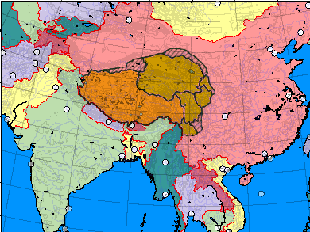
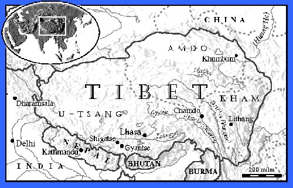

History and Culture of Tibet

Click image to enlarge
An Occupied Country
For two millennia, Tibetan culture developed north of the Himalayas, gradually spreading through much of Central Asia. Home to an extensive monastic system and a vibrant lay culture, Tibetans thrived on scarce resources in a harsh climate. Today, Tibet is an illegally occupied country. Its people are outnumbered by Chinese settlers and its culture is rapidly disappearing.
Invasion and Subjugation
The Chinese army invaded Tibet in 1949. After an abortive national rebellion against Chinese rule in 1959, His Holiness the Dalai Lama, Tibet's head of state and spiritual leader, and some 80,000 Tibetans fled their country into exile. By 1997, this number had reached 130,000. By the mid 1980s, over 1.2 million Tibetans died of starvation, forced labor and execution; thousands of Tibetans were imprisoned and tortured for their beliefs; and all but a handful of Tibet's 6,000 monasteries were destroyed.
A Minority in Their Own Land

Click image to enlarge
Since the early 1980s, China's policy of encouraging Chinese immigration to Tibet has become the single greatest threat to Tibetan culture. Chinese in Tibet now outnumber Tibetans 7.5 to 6 million. Of more than 12,000 shops in Tibet's capital, Lhasa, fewer than 300 are Tibetan-owned. China's 1992 economic "opening" of Tibet to foreign development is creating jobs for Chinese immigrants, jobs for which Tibetans are not trained, and further economically marginalizing Tibetans.
17 Points of Disagreement
60 Years of China's Failed Policies in Tibet
The Crisis in Tibet
Tibetans have responded with non-violent demonstrations calling for independence. From September 1987 to March 1989, protests gathered momentum and international attention until China imposed strict martial law. Although martial law was lifted in 1990, thousands of Chinese troops remain in Tibet. Political unrest continues and is spreading to Tibet's smaller towns and more remote regions. Meanwhile, China continues its widespread campaign of forced abortions and sterilizations, pervasive persecution of Tibetan Buddhism, and accelerating depletion of Tibet's timber and mineral resources.
Tibet in Exile
Tibetan refugees have resettled in communities throughout India, Nepal and the rest of the world. Tibetans continue to flee persecution in Tibet in record numbers. Led by the Dalai Lama, the 1989 Nobel Peace Laureate, Tibetans struggle to retain their culture in exile. With the long-term goal of regaining Tibetan independence, the Dalai Lama has outlined a Five Point Peace Plan for Tibet which would:
- Transform Tibet into a zone of peace;
- Stop the mass transfer of Chinese into Tibet;
- Respect human rights;
- Protect Tibet's natural environment; and
- Commence earnest negotiations with China.
The Chinese government has repeatedly opposed any negotiations with the Dalai Lama and the Tibetan Government in Exile and the brutal oppression of Tibetans continues unabated.
Tibet's Status in the World
The United Nations, the US Congress, the European Parliament, Asia Watch and Amnesty International have all condemned China's repeated violations of human rights and international law in Tibet. In 1989, the US Congress proclaimed Tibet an "occupied country whose true representatives are the Dalai Lama and the Tibetan Government in Exile." However, successive US administrations have officially considered Tibet part of China and have refused to treat the Dalai Lama as a political leader.
Click here for more background information on Tibet.